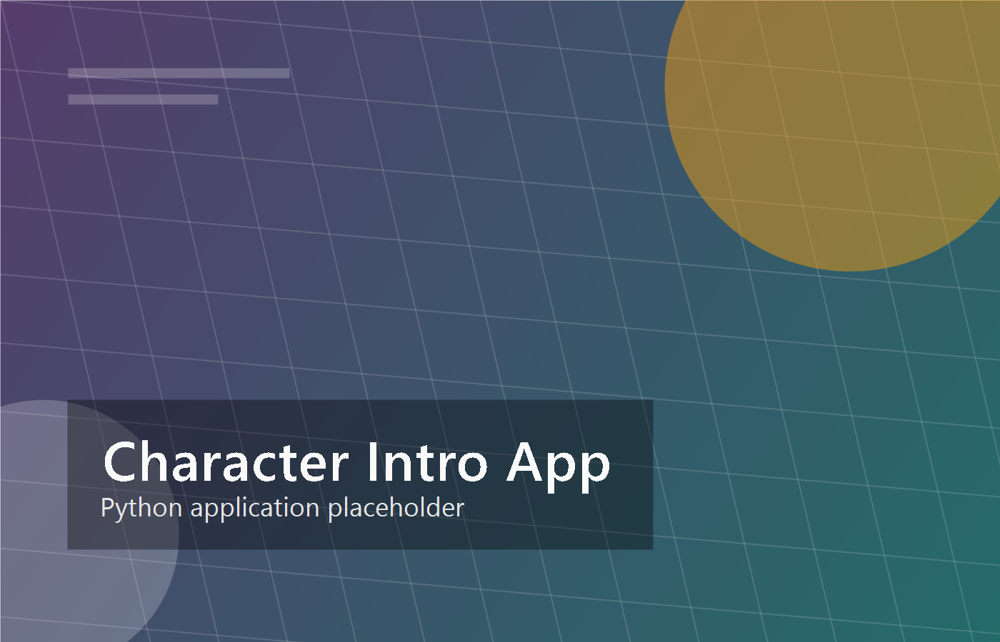
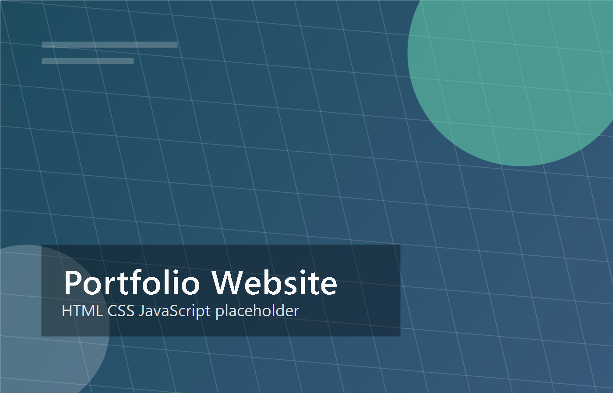

Projects
Systems built where AI, robotics, automation, and thoughtful interfaces meet.

Local VLM Semantic Costmap System
A ROS2 and Nav2 workflow that uses local vision-language reasoning to translate scene context into semantic costmap updates for socially aware autonomous robot navigation.
Document Q&A RAG Prototype
A PDF question-answering pipeline that indexes documents and returns cited passages with repeatable evaluation checks.

SEO Website Generator & Optimizer
A reusable generator that turns business context, location, and keyword intent into structured, SEO-ready webpages.

AI-Enhanced Web Components
Reusable React components with accessibility-first patterns and structured AI-assisted interface copy.
Modern Portfolio Website
A responsive identity site shaped around editorial typography, interactive storytelling, and custom personal details.

Unity Platformer Fighting Game
A Unity prototype focused on responsive movement, combat feel, gameplay state, and rapid mechanics iteration.

Mini-Game Collection
A Java GUI application combining several small games while exploring event-driven programming and state management.